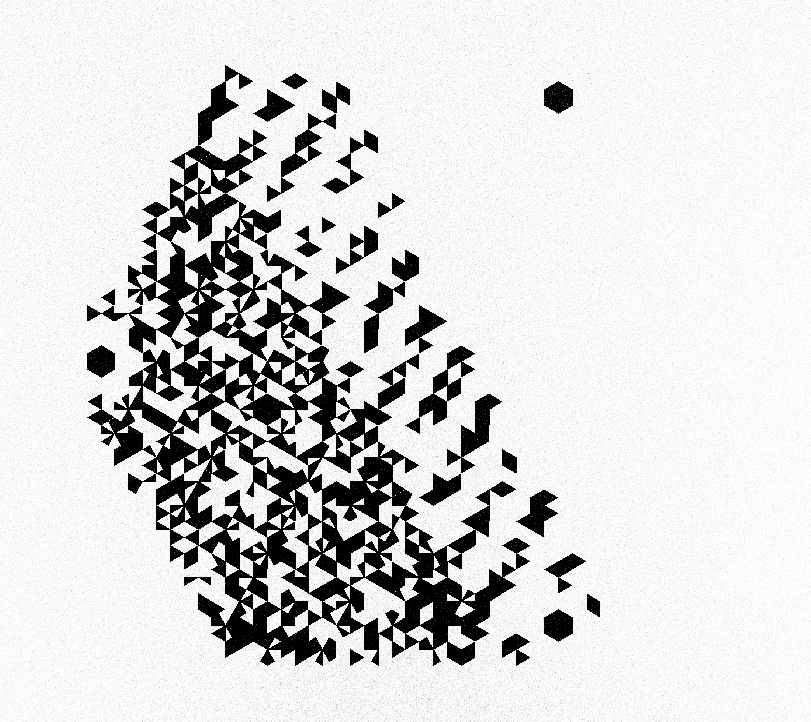
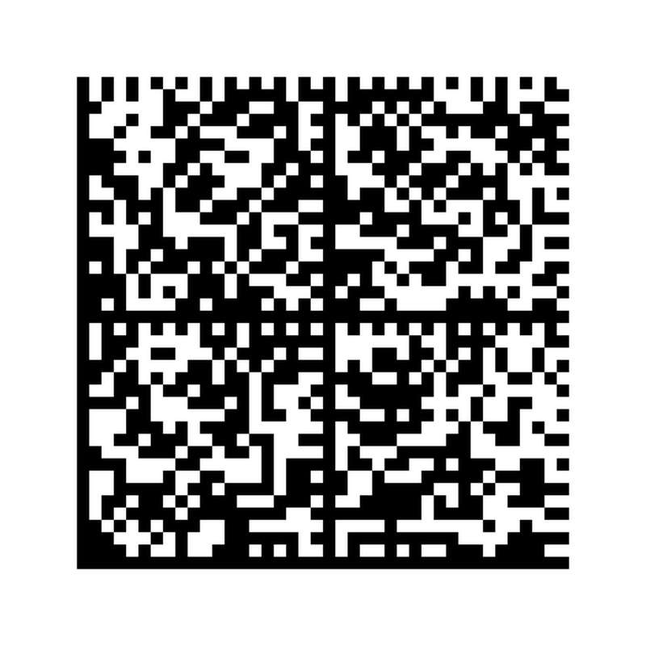
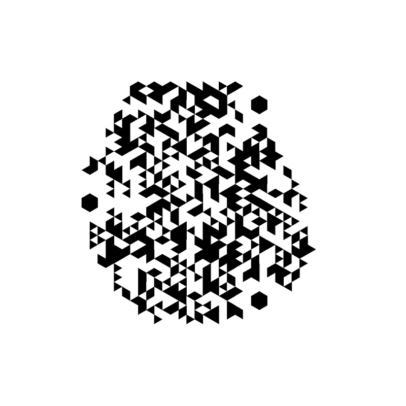

D_QR 연구 진화 갤러리
원본 데이터 → 인코딩된 D_QR 이미지 → 디코딩 결과 — exp1부터 exp20까지의 진화 (빌드: 2026-06-13, py -X utf8 scripts/build_gallery.py)
| 실험 | 이름 | 무엇이 바뀌었나 | 왕복 검증 |
|---|---|---|---|
| exp1 | 색상 3채널 인코딩 | RGB 3채널 × 2비트 = 6비트/모듈. QR 대비 7배 이론 용량의 출발점. | PASS |
| exp2 | 채널 독립 ECC | exp1의 단일 RS 블록을 채널별 독립 RS로 분리 — 채널 국소 오염 격리. | PASS |
| exp3 | 육각 격자 | 사각 격자를 axial 육각 격자(3R²+3R+1셀)로 전환 — 패킹 밀도·3축 좌표 확보. | PASS |
| exp4 | 색상 제거 — 순수 기하 | 색상 채널 폐기, primary 삼각형 6개 이진 채움. 조명·색 의존성 제거 = 정체성 확립. | PASS |
| exp5 | Z-depth (강등) | 부조 높이 2비트 추가 시도 — 용량 +30~65%였으나 제조·스캔 비용으로 강등. | PASS |
| exp6 | 12 서브삼각형 | primary 삼각형을 12 서브삼각형으로 분할 — exp4 대비 정확히 2배 밀도. | PASS / PASS |
| exp7 | 프랙탈 중첩 | 셀 내부에 2레벨 자기유사 헥사곤 — 42비트/외부셀, 해상도 요구와의 트레이드오프. | PASS / PASS |
| exp8 | 듀얼 스트림 (DLC) | 한 이미지에 독립 스트림 2개 — 공개/비공개 차원 분리, 차원 링크 체인 시작. | PASS / PASS |
| exp9 | Soft-decision 소거 | 밝기 마진 신뢰도 + 소거 사다리 — 국소 오염 복구율 hard 25% → soft 100%. | PASS / PASS |
| exp10 | Dual-grain 점진적 공개 | coarse(6bit·ECC30%)/fine(12bit·ECC20%) 공간 분리 + 신뢰도 게이트 — 좋은 센서일수록 더 깊이 읽힌다. | PASS / PASS |
| exp11 | 표 일치율 메트릭 (특허 회피) | 연속 밝기 마진을 이산 표차(vote consensus, N=9)로 교체 — Honeywell FTO 제약 준수. | PASS / PASS |
| exp11b | 표결 3대 결함 해소 | exp11 중단규칙 3대 결함(만장일치-오류·블러 절벽·errata 재소진)을 공간 소거 스윕·내부 링 폴백·예산 검사로 해소 — 오정정 0 달성 (exp12 방어 계층 통합). | PASS / PASS |
| exp13 | 자기기술 코드 | 포맷 링 + 차등 파인더 + 기하 자기추정 — 메타데이터 전무한 PNG만으로 디코딩 (회전·거울상 불변). | PASS / PASS |
| exp14 | 홀로그램 CGH 시뮬 | 창립 가설 '단일색=홀로그램 호환' 0단계 검증 — binary phase CGH 재생에서 coarse+fine 보존, LED 분산에선 coarse만 생존(점진적 공개 이식), RGB 컬러 코드는 붕괴. | PASS / PASS |
| exp15 | 외부 기준선 비교 + 퇴화 가드 | QR(ECC-H)·DataMatrix(ECC200) 상용 구현과 동일 페이로드·면적·열화로 비교 — 노이즈·국소 오염 우위, 블러 열세 정직 계수. 침묵 오정정 7건(전부-0 퇴화)은 exp15b 4층 가드로 0건 봉쇄. | PASS |
| exp16 | 검출 파이프라인 v0 | 마지막 critical 갭 해소 — 메타데이터·위치정보 0인 임의 배치 PNG에서 파인더 자동 탐지 → 어파인+사영 추정 → 자기기술 디코딩. 회전 0~360°·스케일 0.5~2×·원근 ≤20° 100%, 전 구간 침묵 오정정 0. 검출 모듈은 소거 판정 경로와 아키텍처 분리(FTO). | PASS / PASS |
| exp17 | 물리 카메라 열화 모델 | exp16의 이상적 합성을 넘어 인쇄→촬영 간극을 물리 모델로 근사 — 디포커스·모션·비네팅·글레어·Poisson-Gaussian 노이즈·렌즈왜곡·JPEG·도트게인을 발생 순서로 직렬 적용. 약~중간 열화 강건, 전 구간 침묵 오정정 0. 열화 모듈은 입력 생성 전용(FTO 분리). | PASS / PASS |
| exp20 | 점진적 공개 게이트 FTO 이식 | exp10 dual-grain 게이트가 밝기 마진(Honeywell 침해 메트릭) 의존이던 것을 발견 → 표 일치율 이산 게이트로 이식. 헤드라인 정체성 '좋은 센서일수록 더 깊이 읽힌다'를 exp17 물리 열화 위에서 실증: 클린은 coarse+fine, 디포커스 R8은 coarse만(fine 게이트 차단). 침묵 오정정 0. | PASS / PASS |
exp1색상 3채널 인코딩
RGB 3채널 × 2비트 = 6비트/모듈. QR 대비 7배 이론 용량의 출발점.
- bits/module: 7
- ECC 30% (단일 RS 블록)
- 그리드 21×21, 최대 146B
- 벤치마크: QR(ECC-H) 대비 이론 용량 약 7배 — 단 색상 채널은 조명 의존
텍스트
원본 데이터 →
D_QR 진화 데모 — 한국어 페이로드 시험 | 단일색 기하 코드의 연구 진화 갤러리 (2026-06-12)
UTF-8 118 bytes
디코딩 결과
PASSD_QR 진화 데모 — 한국어 페이로드 시험 | 단일색 기하 코드의 연구 진화 갤러리 (2026-06-12)
exp2채널 독립 ECC
exp1의 단일 RS 블록을 채널별 독립 RS로 분리 — 채널 국소 오염 격리.
- bits/module: 7
- ECC 채널 독립 RS: nsym=33/22/21
- 최대 131B
- 벤치마크: 채널별 오류 격리 — 한 채널 오염이 다른 채널을 침범하지 않음
텍스트
원본 데이터 →
D_QR 진화 데모 — 한국어 페이로드 시험 | 단일색 기하 코드의 연구 진화 갤러리 (2026-06-12)
UTF-8 118 bytes
디코딩 결과
PASSD_QR 진화 데모 — 한국어 페이로드 시험 | 단일색 기하 코드의 연구 진화 갤러리 (2026-06-12)
exp3육각 격자
사각 격자를 axial 육각 격자(3R²+3R+1셀)로 전환 — 패킹 밀도·3축 좌표 확보.
- 육각 격자 radius=12 (469셀, 3R²+3R+1)
- ECC 30% (채널 독립 유지)
- 최대 316B
- 벤치마크: 동일 면적에서 사각 격자 대비 패킹 밀도 우위 + 3축(q/r/s) 좌표계
텍스트
원본 데이터 →
D_QR 진화 데모 — 한국어 페이로드 시험 | 단일색 기하 코드의 연구 진화 갤러리 (2026-06-12)
UTF-8 118 bytes
디코딩 결과
PASSD_QR 진화 데모 — 한국어 페이로드 시험 | 단일색 기하 코드의 연구 진화 갤러리 (2026-06-12)
exp4색상 제거 — 순수 기하
색상 채널 폐기, primary 삼각형 6개 이진 채움. 조명·색 의존성 제거 = 정체성 확립.
- bits/cell: 6 (primary 삼각형 6개, 이진 채움)
- ECC 20% (nsym=51)
- 최대 234B, 색상 의존: False
- 벤치마크: 조명·색상 무관 — BER 대폭 감소, 홀로그램(녹색/검정)에도 동일 적용
텍스트
원본 데이터 →
D_QR 진화 데모 — 한국어 페이로드 시험 | 단일색 기하 코드의 연구 진화 갤러리 (2026-06-12)
UTF-8 118 bytes
디코딩 결과
PASSD_QR 진화 데모 — 한국어 페이로드 시험 | 단일색 기하 코드의 연구 진화 갤러리 (2026-06-12)
exp5Z-depth (강등)
부조 높이 2비트 추가 시도 — 용량 +30~65%였으나 제조·스캔 비용으로 강등.
- bits/cell: 8 (삼각형 6 + z-depth 2)
- ECC 20% (nsym=51)
- 최대 145B
- 벤치마크: z-depth 2비트로 용량 +30~65% — 단 제조(3D프린트)·스캔(LiDAR) 비용으로 강등
텍스트(flat 2D, 높이는 시뮬레이션)
원본 데이터 →
D_QR 진화 데모 — 한국어 페이로드 시험 | 단일색 기하 코드의 연구 진화 갤러리 (2026-06-12)
UTF-8 118 bytes
디코딩 결과
PASSD_QR 진화 데모 — 한국어 페이로드 시험 | 단일색 기하 코드의 연구 진화 갤러리 (2026-06-12)
exp612 서브삼각형
primary 삼각형을 12 서브삼각형으로 분할 — exp4 대비 정확히 2배 밀도.
- bits/cell: 12 (12 서브삼각형)
- ECC 20% (nsym=51)
- 최대 204B
- 벤치마크: exp4 대비 정확히 2배 용량 (동일 면적·동일 ECC)
텍스트
원본 데이터 →
D_QR 진화 데모 — 한국어 페이로드 시험 | 단일색 기하 코드의 연구 진화 갤러리 (2026-06-12)
UTF-8 118 bytes
디코딩 결과
PASSD_QR 진화 데모 — 한국어 페이로드 시험 | 단일색 기하 코드의 연구 진화 갤러리 (2026-06-12)
바이너리 PNG (16×16)
원본 데이터 →

PNG 457 bytes (16×16)
exp7프랙탈 중첩
셀 내부에 2레벨 자기유사 헥사곤 — 42비트/외부셀, 해상도 요구와의 트레이드오프.
- bits/외부셀: 42 (프랙탈 2레벨, 내부 7셀)
- ECC 20% (nsym=51)
- 최대 816B (r=8)
- 벤치마크: exp6 대비 3.5배 용량 — 단 내부 셀이 작아져 해상도 요구 급증
텍스트
원본 데이터 →
D_QR 진화 데모 — 한국어 페이로드 시험 | 단일색 기하 코드의 연구 진화 갤러리 (2026-06-12)
UTF-8 118 bytes
디코딩 결과
PASSD_QR 진화 데모 — 한국어 페이로드 시험 | 단일색 기하 코드의 연구 진화 갤러리 (2026-06-12)
바이너리 PNG (16×16)
원본 데이터 →
PNG 457 bytes (16×16)
exp8듀얼 스트림 (DLC)
한 이미지에 독립 스트림 2개 — 공개/비공개 차원 분리, 차원 링크 체인 시작.
- 스트림 2개 독립 채널 (A 503셀 / B 503셀)
- ECC 20% (스트림별 독립 RS)
- 스트림당 최대 601B
- 벤치마크: 동일 이미지에서 공개/비공개 데이터셋 분리 — 차원 링크 체인의 시작
Stream A — 공개 텍스트
원본 데이터 →
D_QR 진화 데모 — 한국어 페이로드 시험 | 단일색 기하 코드의 연구 진화 갤러리 (2026-06-12)
UTF-8 118 bytes
디코딩 결과
PASSD_QR 진화 데모 — 한국어 페이로드 시험 | 단일색 기하 코드의 연구 진화 갤러리 (2026-06-12)
Stream B — 비공개 PNG (같은 이미지)
exp9Soft-decision 소거
밝기 마진 신뢰도 + 소거 사다리 — 국소 오염 복구율 hard 25% → soft 100%.
- bits/cell: 6 (프로파일 A — 인쇄·실외)
- ECC 30% (nsym=76)
- 최대 184B (r=12)
- 벤치마크: 밝기 마진 신뢰도 + 소거 사다리 — 국소 오염 복구 hard 25% → soft 100%
텍스트
원본 데이터 →
D_QR 진화 데모 — 한국어 페이로드 시험 | 단일색 기하 코드의 연구 진화 갤러리 (2026-06-12)
UTF-8 118 bytes
D_QR 이미지 →

exp9_code.png
디코딩 결과
PASSD_QR 진화 데모 — 한국어 페이로드 시험 | 단일색 기하 코드의 연구 진화 갤러리 (2026-06-12)
복호 모드: hard (소거 0개)
바이너리 PNG (16×16)
원본 데이터 →
PNG 457 bytes (16×16)
D_QR 이미지 →

exp9_code_binary.png
exp10Dual-grain 점진적 공개
coarse(6bit·ECC30%)/fine(12bit·ECC20%) 공간 분리 + 신뢰도 게이트 — 좋은 센서일수록 더 깊이 읽힌다.
- dual-grain: coarse 6bit/셀 ECC 30% (512셀) + fine 12bit/셀 ECC 20% (494셀)
- 용량: coarse 232B / fine 588B
- 신뢰도 게이트 FINE_GATE_THRESHOLD=0.405 (vote 메트릭, 단독 방어 아님 — 1·2층이 보강)
- 벤치마크: 블러 6.0px에서 fine 붕괴(게이트 차단), coarse는 10px까지 생존
coarse — 코어 텍스트 (저해상 생존)
원본 데이터 →
D_QR 진화 데모 — 한국어 페이로드 시험 | 단일색 기하 코드의 연구 진화 갤러리 (2026-06-12)
UTF-8 118 bytes
디코딩 결과
PASSD_QR 진화 데모 — 한국어 페이로드 시험 | 단일색 기하 코드의 연구 진화 갤러리 (2026-06-12)
mode=hard
fine — 확장 PNG (고해상 전용, 같은 이미지)
원본 데이터 →
PNG 457 bytes (16×16)
exp11표 일치율 메트릭 (특허 회피)
연속 밝기 마진을 이산 표차(vote consensus, N=9)로 교체 — Honeywell FTO 제약 준수.
- 인코딩은 exp9 그대로 — 디코더만 교체 (샘플점 N=9/삼각형)
- ECC 30% (nsym=76)
- 신뢰도 = 이산 표차(vote consensus), 전역 임계 128 — 연속 밝기 마진 미사용
- 벤치마크: Honeywell US 10,235,547 패밀리(반사율/대비 연속 신뢰도) FTO 회피 달성
텍스트 (exp9 인코더 + v11 디코더)
원본 데이터 →
D_QR 진화 데모 — 한국어 페이로드 시험 | 단일색 기하 코드의 연구 진화 갤러리 (2026-06-12)
UTF-8 118 bytes
디코딩 결과
PASSD_QR 진화 데모 — 한국어 페이로드 시험 | 단일색 기하 코드의 연구 진화 갤러리 (2026-06-12)
복호 모드: hard (소거 0개)
바이너리 PNG (16×16)
원본 데이터 →
PNG 457 bytes (16×16)
D_QR 이미지 →

exp11_code_binary.png
exp11b표결 3대 결함 해소
exp11 중단규칙 3대 결함(만장일치-오류·블러 절벽·errata 재소진)을 공간 소거 스윕·내부 링 폴백·예산 검사로 해소 — 오정정 0 달성 (exp12 방어 계층 통합).
- 3층 해소: ①공간 소거 스윕+합의 수락(만장일치-오류) ②내부 링 폴백 t≤0.3(블러 절벽) ③청크 errata 예산+최종 단계 순수 소거(잔존 오정정 84건 시그니처)
- ECC 30% (nsym=76) — 인코딩은 exp9 그대로, 디코더만 v11b
- 3자 비교(밝기 마진/표결 v11/v11b): 노이즈 σ135 → 0%/100%/100% · 블러 9.5px → 100%/0%/100%
- 오정정: 이미지 실측 합계 176/82/0건, 코드워드 시뮬 1만 회 237→84(exp12 방어)→0건 — false reject 0
- 잔존 한계(정직 고지): 균일 패치 일치율은 margin 대비 최대 A 28%p / B 44%p 열세 — FTO 1 준수의 구조적 비용
텍스트 (exp9 인코더 + v11b 디코더)
원본 데이터 →
D_QR 진화 데모 — 한국어 페이로드 시험 | 단일색 기하 코드의 연구 진화 갤러리 (2026-06-12)
UTF-8 118 bytes
D_QR 이미지 →

exp11b_code.png
디코딩 결과
PASSD_QR 진화 데모 — 한국어 페이로드 시험 | 단일색 기하 코드의 연구 진화 갤러리 (2026-06-12)
복호 모드: hard (소거 0개, 링 패스 (0.5, 0.25))
바이너리 PNG (16×16)
원본 데이터 →
PNG 457 bytes (16×16)
exp13자기기술 코드
포맷 링 + 차등 파인더 + 기하 자기추정 — 메타데이터 전무한 PNG만으로 디코딩 (회전·거울상 불변).
- 예약 셀 = 파인더 21 + 포맷 링 54 (18비트×3사본 비트별 다수결) — version·profile·ECC·radius 내장
- 차등 파인더(NE 이웃 2셀 채움)로 D3 대칭 깨기 — 회전 3×거울상 6가지 가설 중 유일 판별
- 길이 프리픽스 4B + 용량 0패딩 → codeword_len이 radius·nsym에서 유일 결정 (외부 메타데이터 불요)
- 최대 175B (r=12, 프로파일 A, ECC 30%)
- 벤치마크: 프로파일 A/B × 회전·거울상 6변형 왕복 100% — dqr_decode CLI가 메타 없는 PNG 자동 인식
텍스트 — 이미지 파일만으로 디코딩 (메타데이터 없음)
원본 데이터 →
D_QR 진화 데모 — 한국어 페이로드 시험 | 단일색 기하 코드의 연구 진화 갤러리 (2026-06-12)
UTF-8 118 bytes
디코딩 결과
PASSD_QR 진화 데모 — 한국어 페이로드 시험 | 단일색 기하 코드의 연구 진화 갤러리 (2026-06-12)
자기추정(메타데이터 0): r=12, hex=32.0px, 프로파일 A, ECC lv2 (nsym=76), 회전 0° — 모드 hard, 소거 0개
바이너리 PNG — 회전 120° 입력 (프로파일 B, 메타데이터 없음)
원본 데이터 →
PNG 457 bytes (16×16)
디코딩 결과
PASS디코딩 바이트 = 원본 바이트 (파일)
자기추정(메타데이터 0): r=18, hex=32.0px, 프로파일 B, ECC lv1 (nsym=51), 회전 240° — 모드 hard, 소거 0개
exp14홀로그램 CGH 시뮬
창립 가설 '단일색=홀로그램 호환' 0단계 검증 — binary phase CGH 재생에서 coarse+fine 보존, LED 분산에선 coarse만 생존(점진적 공개 이식), RGB 컬러 코드는 붕괴.
- 패턴: exp10 dual-grain (r=12, coarse 230셀 / fine 218셀), CGH = Gerchberg-Saxton 50+25회, field 2048², 오프축 창
- 재생 효율 η=0.421 (이진 위상 물리 상한 ~0.405와 정합, 쌍둥이 상 몫 제외), 충실도 corr=0.971
- (b) 백색 LED 3파장 분산: coarse κ≤0.05 / fine κ≤0.02 — coarse만 생존하는 대역 존재 = 점진적 공개가 분산 도메인으로 이식
- (c) 스페클: coarse 전수생존 C≤0.5 / fine C≤0.4 — 생존 경계 실측
- 대조군: RGB 3채널 컬러 코드는 백색 조명에서 비트 정확도 68~74%로 붕괴 (단일색 100%) — 창립 가설 '단일색=홀로그램 호환' 지지 (판독은 decoder_v10 그대로, 새 신뢰도 메트릭 없음)
(a) 코히어런트 532nm 재생 — 합격선: coarse+fine 동시 판독
홀로그램 재생상 → 디코딩
PASS
exp14_replay_coherent.png
https://dqr.kr/h — exp14 코어 exp14 확장 페이로드: 홀로그램 재생 점진적 공개 검증.
coarse O (hard) / fine O (hard), vote 신뢰도=0.818
(b) 백색 LED 3파장 분산 κ=0 (이미지면, 엠보싱 양산 경로) — 합격선: coarse 생존


exp15외부 기준선 비교 + 퇴화 가드
QR(ECC-H)·DataMatrix(ECC200) 상용 구현과 동일 페이로드·면적·열화로 비교 — 노이즈·국소 오염 우위, 블러 열세 정직 계수. 침묵 오정정 7건(전부-0 퇴화)은 exp15b 4층 가드로 0건 봉쇄.
- 공정 비교 규약: 동일 페이로드 59B · 동일 점유 면적(640² 상당 → 800² 캔버스) · 동일 열화(시드 42, exp9/exp11b 모델) — 조건 18개 × N=100
- ECC 오버헤드 비동일(명시): QR ECC-H 66.3% / DataMatrix ECC200 29.6% / D_QR A+v11b 56.3% — 짧은 페이로드에서 D_QR 실효 ECC가 가장 높은 축
- 검출 비대칭(명시): D_QR만 기하 파라미터 제공 — D_QR 성공률은 검출 비용 제외 상한. 단 침묵 오정정 지표는 '반환했으면 책임진다' 기준이라 비대칭 무관
- 침묵 오정정(핵심 지표): QR ECC-H 0건 / DataMatrix ECC200 0건 / D_QR A+v11b 7건 — D_QR 7건은 전부-0 코드워드 퇴화 단일 모드(군집 블롯 한정, RS 선형성상 전부-0은 항상 유효 코드워드)
- exp15b 4층 가드(softdecode.is_degenerate_message — 전부-0/상수 메시지 결정론 거부, CRC 아님)로 봉쇄: 블롯 채널 동일 이미지 재측정 오정정 7건 → 0건, 정상 복호 변동 +0건 · exp11b 스위트 2,000 이미지 오정정 0건 유지 · 실측 케이스(blot2 trial8) 직접 재현·거부 확인 — v11b(기본 on)·v13·공간 소거 스윕 양 경로 활성, exp9~12 기본값 off 동결 + 인코더 LFSR 스크램블(v13 기본 on)
- 지는 구간(정직 고지): 블러 6px에서 DataMatrix 100% vs D_QR 0% — 동일 면적 정규화에서 고밀도 기하의 비트당 특성이 가장 작은 데서 오는 구조적 비용 (네이티브 해상도에선 9.5px 생존)
동일 면적 정규화 캔버스 — 깨끗한 상태 왕복 검증 + 열화 비교표 (수치: outputs/exp15/exp15_baseline_report.md 실측)
DataMatrix ECC200
PASS
DataMatrix 40x40 ECC200 · 특성 15.2px · ECC 29.6% · pylibdmtx (timeout 1500ms)
D_QR A+v11b
PASS
D_QR 프로파일 A (radius 8, 6bit/셀) + v11b · 특성 18.4px · ECC 56.3% · DQRDecoderV11B (기하 파라미터 제공)
| 심볼로지 | 성공 (전 조건) | 침묵 오정정 | 거부 | 노이즈 σ140 | 산포 20패치 | 블롯 2개 | 블러 6px |
|---|---|---|---|---|---|---|---|
| QR ECC-H | 646 / 1,800 | 0 | 1,154 | 14% | 4% | 4% | 0% |
| DataMatrix ECC200 | 416 / 1,800 | 0 | 1,384 | 0% | 0% | 0% | 100% |
| D_QR A+v11b | 1,014 / 1,800 | 7 | 779 | 100% | 95% | 26% W1 | 0% |
PASS 기준: 깨끗한 캔버스에서 각 판독기가 동일 59B 페이로드를 정확 반환. 표의 성공률·오정정(W)은 조건당 N=100 실측.
exp16검출 파이프라인 v0
마지막 critical 갭 해소 — 메타데이터·위치정보 0인 임의 배치 PNG에서 파인더 자동 탐지 → 어파인+사영 추정 → 자기기술 디코딩. 회전 0~360°·스케일 0.5~2×·원근 ≤20° 100%, 전 구간 침묵 오정정 0. 검출 모듈은 소거 판정 경로와 아키텍처 분리(FTO).
- 검출 = 전역 Otsu → 연결 성분 → 형상 필터 → 흰 링 검증으로 단일 파인더 후보 → 닮음 2점 대응으로 NE 꼭짓점 가설(배정 2×거울 2)×반경 스냅
- 정밀화 = 꼭짓점 이산 격자 스윕 + 3점 어파인 + 사영 (g,h) 스윕 — 목적함수는 전부 정수 표 합(연속 밝기량 없음, FTO 준수)
- 디코딩 = decoder_v13에 좌표 사상만 주입 — 포맷 링 대조·3층 방어·소거 사다리·퇴화 가드 등 판정 경로 무수정 (아키텍처 분리)
- 스윕 1,400회(조건 28×N=50): 회전 0~360°·스케일 0.5~2×·원근 ≤20° 100% 검출·복호, 원근 25°/30°는 우아한 저하(검출 92%/84%) — 전 구간 침묵 오정정 0건
- v1(exp18): 쌍 순위를 격자 반경 스냅(이산 기하)으로 보강 — 모션 블러·글레어 강건성 향상, 기하 스윕 회귀 없음. 잔여 v1 과제: 손촬영·복잡 배경·심한 원근>20°
텍스트 — 회전 137°+축소 장면에서 위치정보 0으로 검출·디코딩
원본 데이터 →
D_QR 진화 데모 — 한국어 페이로드 시험 | 단일색 기하 코드의 연구 진화 갤러리 (2026-06-12)
UTF-8 118 bytes
디코딩 결과
PASSD_QR 진화 데모 — 한국어 페이로드 시험 | 단일색 기하 코드의 연구 진화 갤러리 (2026-06-12)
검출(메타데이터 0): 파인더 자동 탐지 → 어파인 추정, r=12, hex≈12.6px, 가설 1건 중 표마진 최상위 채택 — 복호 모드 hard
바이너리 PNG — 회전 290°+원근 12° 장면 검출·디코딩 (프로파일 B)
원본 데이터 →
PNG 457 bytes (16×16)
디코딩 결과
PASS디코딩 바이트 = 원본 바이트 (파일)

검출(메타데이터 0): 파인더 자동 탐지 → 어파인 추정, r=18, hex≈15.1px, 가설 1건 중 표마진 최상위 채택 — 복호 모드 hard
exp17물리 카메라 열화 모델
exp16의 이상적 합성을 넘어 인쇄→촬영 간극을 물리 모델로 근사 — 디포커스·모션·비네팅·글레어·Poisson-Gaussian 노이즈·렌즈왜곡·JPEG·도트게인을 발생 순서로 직렬 적용. 약~중간 열화 강건, 전 구간 침묵 오정정 0. 열화 모듈은 입력 생성 전용(FTO 분리).
- 열화 모델(물리 수식·출처는 degrade.py 주석): 디포커스 disk PSF(Mannan&Langer) · 손떨림 선형 모션 · 비네팅 cos⁴(Aggarwal) · 정반사 글레어 · Poisson-Gaussian 센서 노이즈(Foi) · Brown-Conrady 렌즈 왜곡 · JPEG 양자화 · 인쇄 도트게인
- 물리 발생 순서로 직렬 적용: 인쇄 → 광학 → 센서 → 저장. 회전 0~360°+원근 배치 위에 입힘
- 검출 스윕(조건 32×N=50, exp18 v1 적용): 디포커스 R6·노이즈 전ISO·JPEG QF30·비네팅·렌즈왜곡·모션 L5 100%, 모션 L9 96%·글레어 100% — severe 다중중첩만 v0 범위 밖, 전 구간 침묵 오정정 0건
- exp18 검출 v1: 모션 진단(가짜 파인더 폭증→쌍 상한 포화)을 격자 반경 스냅 순위로 해소 — 모션 L9 검출 57→96%, 글레어 90→100% (이산 기하 판별, 밝기량 아님)
- FTO: 열화 모듈은 입력 생성 전용 — 소거·신뢰도 판정 경로(softdecode·spatial·consensus) 미임포트, 디코더는 열화 존재를 모름
- 다음 단계: 합성을 넘어 실물 인쇄→카메라 촬영(exp19 후보) — 레이저 각인 알루미늄·종이 실촬영
텍스트 — moderate 물리 열화(디포커스·모션·글레어·노이즈·JPEG70) 통과 검출
원본 데이터 →
D_QR 진화 데모 — 한국어 페이로드 시험 | 단일색 기하 코드의 연구 진화 갤러리 (2026-06-12)
UTF-8 118 bytes
디코딩 결과
PASSD_QR 진화 데모 — 한국어 페이로드 시험 | 단일색 기하 코드의 연구 진화 갤러리 (2026-06-12)
물리 열화 'moderate' 통과 후 검출(메타·위치정보 0): r=12, hex≈21.9px, 가설 1건 — 복호 모드 hard
바이너리 PNG — mild 물리 열화(양호한 촬영) 통과 검출 (프로파일 B)
원본 데이터 →
PNG 457 bytes (16×16)
D_QR 이미지 →

exp17_scene_binary.png
디코딩 결과
PASS디코딩 바이트 = 원본 바이트 (파일)

물리 열화 'mild' 통과 후 검출(메타·위치정보 0): r=18, hex≈20.9px, 가설 1건 — 복호 모드 hard
exp20점진적 공개 게이트 FTO 이식
exp10 dual-grain 게이트가 밝기 마진(Honeywell 침해 메트릭) 의존이던 것을 발견 → 표 일치율 이산 게이트로 이식. 헤드라인 정체성 '좋은 센서일수록 더 깊이 읽힌다'를 exp17 물리 열화 위에서 실증: 클린은 coarse+fine, 디포커스 R8은 coarse만(fine 게이트 차단). 침묵 오정정 0.
- dual-grain: coarse 6bit/셀 ECC30% (512셀) + fine 12bit/셀 ECC20% (494셀)
- FTO 이식(exp20): 점진적 공개 게이트를 밝기 마진→표 일치율 이산(표차 평균/N)으로 교체 — exp10 마진 경로(Honeywell 회피)는 동결, 출원·공개는 exp20
- 좋은 센서(클린): coarse+fine 둘 다 복호 (fine_consensus=1.000) · 나쁜 센서(디포커스 R8): coarse만 생존, fine 게이트 차단(None, consensus=0.879)
- = 헤드라인 정체성 '좋은 센서일수록 더 깊이 읽힌다'를 밝기 마진 없이 구현 · 전 단계 침묵 오정정 0(coarse 절대 오답 없음, fine은 우아한 강등)
coarse — 코어 텍스트 (저해상·열화 생존)
원본 데이터 →
D_QR 진화 데모 — 한국어 페이로드 시험 | 단일색 기하 코드의 연구 진화 갤러리 (2026-06-12)
UTF-8 118 bytes
디코딩 결과
PASSD_QR 진화 데모 — 한국어 페이로드 시험 | 단일색 기하 코드의 연구 진화 갤러리 (2026-06-12)
클린 mode=hard · 디포커스 R8에서도 coarse 복호 OK=True
fine — 확장 PNG (고해상 전용, 표결 게이트)
원본 데이터 →
PNG 457 bytes (16×16)